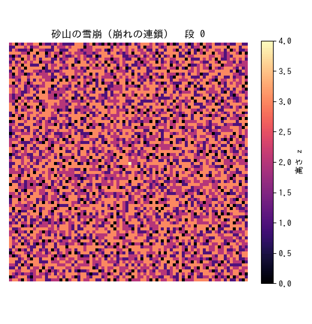

実験 03: 砂山モデル — 自己組織化臨界 (SOC)
分野: 自己組織化臨界 / スタック: Jupyter（重い統計計算 → 出力固定）+ GIF アニメ
Bak–Tang–Wiesenfeld 砂山モデル。1 粒ずつ砂を落とすだけで、系はパラメータ調整なしに 臨界状態へ自己組織化し、雪崩の大きさがべき分布になる。「なぜ自然界はべき則だらけ なのか」「金融のファットテールはどこから来るのか」という問いの最小モデル。 理論は ../../notes/self_organized_criticality.md を参照。
なぜ Jupyter か
主役は「多数の雪崩を集めて分布を測る」重い統計計算。一度回して図に固定したいので Jupyter（出力込みで保存 → GitHub でそのまま見える）が適任。実験02（marimo・対話）との 使い分け方針は ../../lectures/notebooks_jupyter_vs_marimo.pdf に。 加えて新しい可視化技として、雪崩の連鎖を GIF アニメーションにした。
実験条件
| 項目 | 値 |
|---|---|
| 格子サイズ \(L\) | 64（統計）/ 80（GIF） |
| 崩れ閾値 \(z_c\) | 4 |
| 境界条件 | 開放（系外へ散逸） |
| 駆動 | ランダムな点に 1 粒ずつ |
| 記録した雪崩数 | 約 12 万回分の駆動 |
| 乱数シード | 0（再現可能） |
実行方法
pip install -r ../../requirements.txt
jupyter notebook sandpile_analysis.ipynb # 解析（出力込みで閲覧可）
python3 make_gif.py # 雪崩アニメ → figures/avalanche.gif結果
雪崩の連鎖（アニメーション）

臨界状態の砂山に 1 粒足すと、崩れが崩れを呼んで連鎖的に広がる様子。
べき分布：特徴的スケールの不在（本実験の主役）
雪崩サイズ \(s\) の分布は \(P(s)\sim s^{-\tau}\) というべき則になり、両対数で直線。 測定値 \(\tau\approx1.1\)（2D BTW の報告値は手法・ビン取り依存で \(\approx1.0\text{–}1.3\)）。 高サイズ端の折れ曲がりは有限サイズ・カットオフ。詳細は sandpile_analysis.ipynb （出力込み・GitHub 上で全図が見える）を参照。ノートブックには以下を収録:
- 平均高さが臨界値（\(\approx2.12\)）へ自己組織化する様子
- 臨界状態の砂山配置（ヒートマップ）
- 雪崩サイズ分布のべき則と指数フィット
- 継続時間・広がりの分布（こちらもべき則）
構成
| ファイル | 役割 |
|---|---|
sandpile.py |
BTW モデル本体（numpy 並列崩れ・雪崩統計・対数ビン） |
sandpile_analysis.ipynb |
解析ノートブック（出力プロット埋め込み済み） |
make_gif.py |
雪崩アニメを figures/avalanche.gif に書き出す |
気づき
- 自己組織化: 平均高さが誰の調整もなしに臨界値へ収束。負のフィードバック （急すぎると大雪崩で散逸、平らだと溜まる）が臨界の傾きへ系を導く。
- べき則 = 特徴的スケールの不在: 「典型的な雪崩の大きさ」が定義できない。 小さな擾乱がときに系全体を巻き込む。
- 金融への含意: 大暴落に固有の引き金は要らないかもしれない——臨界状態では ありふれた一粒が連鎖して全体を動かしうる（市場の SOC 仮説）。
- 実験02（外から \(K\) を動かして臨界を跨ぐ）と本実験（調整なしに臨界へ）の対比が、 複雑系における臨界の二つの現れ方を示す。